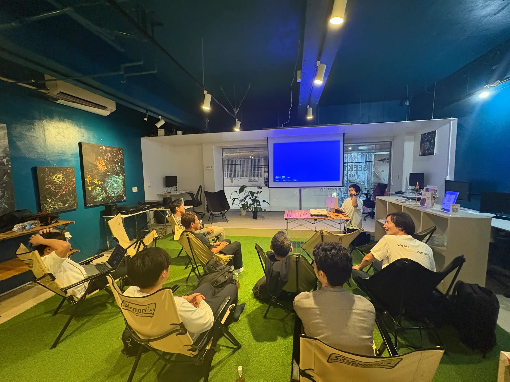
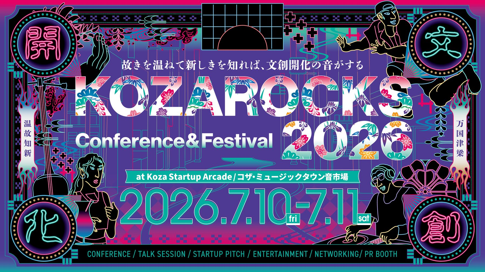
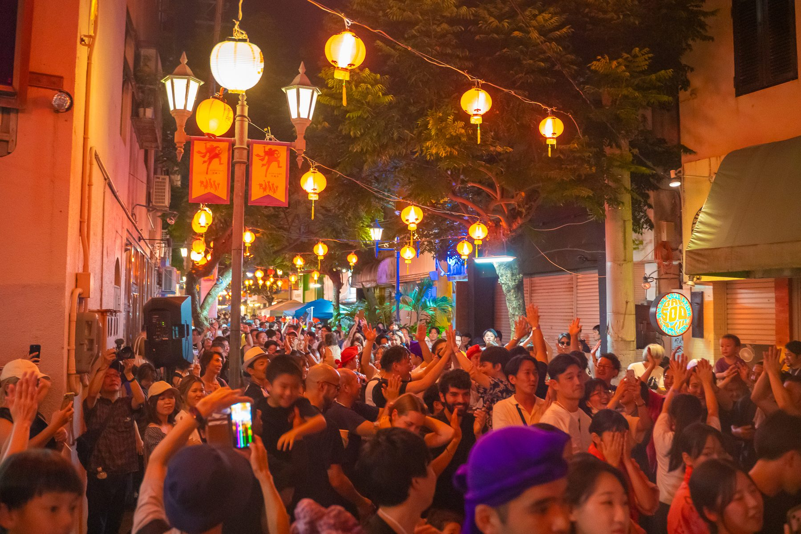

新しい企画・プロジェクトづくり
企業や地域の「やってみたい」を、目的と成功の定義から整理し、実行できる企画にします。
Services
Cignalsの仕事は、大きく3つの領域に分かれます。ポスター1枚、サイト1つのご依頼から、プロジェクト全体を任せていただく形まで。必要な関わり方でご一緒します。

01 / Planning & Produce
「何をやるか」の前に、「何のためにやるか」から一緒に考えます。
企業や地域の新しい企画を立ち上げ、必要なクリエイターや地域のパートナーとチームを組み、実行まで責任を持って進めます。
企業や地域の「やってみたい」を、目的と成功の定義から整理し、実行できる企画にします。
コンセプトづくりから、ネーミング、売り方、伝え方までを一緒に設計します。
関係者との調整、外部パートナーの手配、進行管理まで。立ち上げ期の実務を引き受けます。
月額伴走
構想段階から月額で伴走し、イベント・デザイン・映像・SNSを束ねてプロジェクトの成功まで並走します。月額 ¥200,000〜（制作実費は別途）。
月額伴走について詳しく関連する実績：KOZA BASECAMP／Paint The City／ONE NIGHT MAKE LOVE vol.2
企画・プロジェクトを相談する
02 / Creative Production
キービジュアルから、サイト、映像まで。世界観を揃えて、まとめてつくれます。
プロジェクトごとに最適なクリエイターとチームを組み、アートディレクションから制作まで一貫して担当します。1点だけのご依頼も歓迎です。
イベントの公式サイト、コーポレートサイト、LPまで。自社のWeb制作サービス「MIKKA by Cignals」でスピーディーにつくることもできます。
オープニング映像、ダイジェスト、プロモーション映像、現場の記録撮影を行います。
キービジュアル、ポスター、チラシ、会場マップ、のぼり、Tシャツなどのノベルティまで制作します。
ロゴやトーンの設計から、制作物全体の世界観を揃えるディレクションまで担当します。
関連する実績：KOZAROCKS／パルミラ夜市／KSA ROOTS MARKET／Arcade Resort Okinawa／WORK PRO OFFICE
制作を依頼する
03 / Event & Experience
街を舞台に、人が集まり、記憶に残る体験をつくります。
イベントの企画・制作・運営から、企業や行政のチームがコザの街で学ぶ研修・滞在プログラムまで。当日の盛り上がりと、その後に残る記録の両方を設計します。
フェス、マーケット、商店街のイベントを、構想から当日の現場ディレクションまで担当します。
告知物、SNS、スポンサー提案まで、イベントや商品が届くための導線を設計します。
企業・行政向け
Arcade Resort Okinawaに泊まり、KOZA BASECAMPでつくり、街で問いを持ち帰る。研修の設計から記録・成果物化まで伴走します。5名から実施可能です。
研修について詳しく音楽、映像、企画、対話が交差する制作スタジオ。街で得た違和感や問いを、チームで言葉・企画・コンテンツへ編集する拠点です。
拠点情報を見るコザ一番街の空気を感じながら滞在できる、街の入口となる宿泊拠点。合宿・研修では、日常から離れ、地域と接続するためのベースになります。
公式サイトを見る関連する実績：KOZAROCKS／パルミラ夜市／岡野バルブ製造 企業研修
How to work with us
相談内容に合わせて、関わり方を選べます。
Spot
ポスターだけ、サイトだけ、映像だけ。必要な制作物を1点からお受けします。
制作物ごとにお見積もり
Project
イベントや企画1本を、企画・制作・運営までまとめてお任せいただく形です。
規模に応じて個別にお見積もり
Monthly
年間を通じて、企画・発信・地域との連携を月額で伴走します。
月額 ¥200,000〜（制作実費は別途）
FAQ
はい。ポスター1枚、サイト1つからお受けしています。企画からまとめてご相談いただくことも可能です。
はい、大歓迎です。「コザで何かやりたい」という漠然とした段階でも、一緒に企画を練ることができます。
はい。オンラインでの打ち合わせにも対応しています。地域との接続はCignalsが担います。
企業研修は5名から承ります。人数・日程・予算に合わせてカスタマイズします。
活用実績があります。ご相談の際にご希望をお聞かせください。適用できる制度をご案内します。
はい。Zoom / Google Meet等でのオンライン打ち合わせに対応しています。現地でのご相談も歓迎です。
Contact
ご予算・規模・目的をお聞きして、最適な進め方をご提案します。
相談する